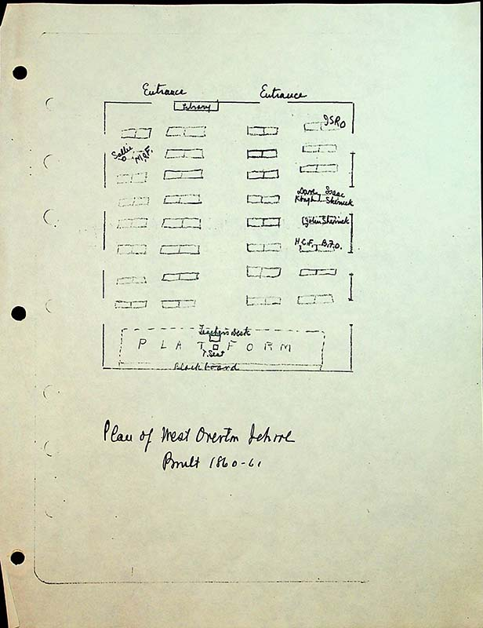
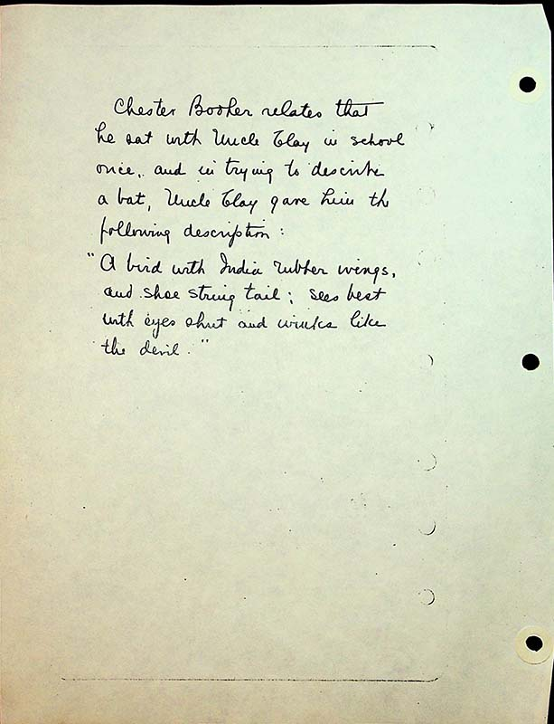
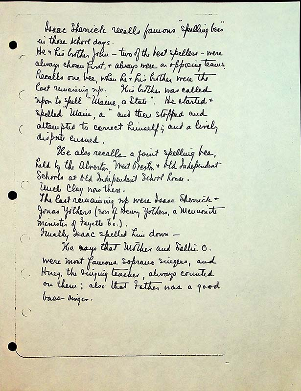

[school seating chart with two entrances at top of page]:
Sallie O, M.O.F. [first column, second row from top of page]:
JSRO [fourth column, first row from top of page]:
Dave Kough, Isaac Sherrick [fourth column, fourth row from top]:
John Sherrick [fourth column, fifth row from top of page]:
HCF, BFO [fourth column sixth row from top of page]:
Teacher’s desk, chalkboard [At the button of diagram in section marked "platform"]:
Place of West Overton School,
Built 1860-61
Chester Booher relates that he sat with Uncle Clay in school once, and in trying to describe a bat, Uncle Clay gave him the following description:
“A bird with India rubber wings, and shoe string tail; sees best with eyes shut and winks like the devil.”
Isaac Sherrick recalls famous “spelling bees” in those school days.
He and his brother John- two of the best spellers- were always chosen first, & and always were on opposing teams.
Recalls one bee, when he & his brother were the last remaining ?fs. His brother was called upton to spell “Maine, a State.” He started & spelled Main, a” and then stopped and attempted to correct himself; and a lively dispute ensued.
He also recalls a joint spelling bee, held by the Alverton, West Overton, and Old Independent Schools at Old Independent School house.
Uncle Clay was there.
The last remaining were Isaac Sherrick & Jonas Yothers (sone of Henry Yothers a Mennonite minister of Fayette Co).
Finally Isaac spelled him down-
He says that Mother and Sallie O. [were most famous soprano singers, and Huey, the singing teacher, always counted on them; also that Father was a good bass singer.